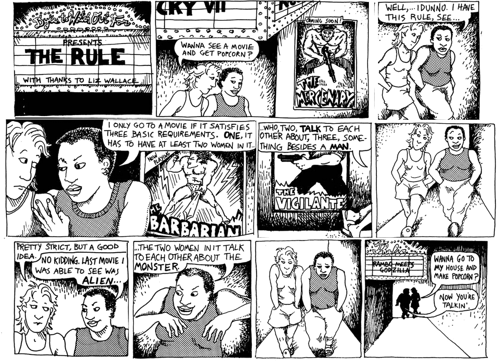

The Bechdel Test (also known as the Bechdel Rule or Mo Movie Measure) is a simple assessment used to indicate the active presence of women in Hollywood films and measure their dynamic character profile.
It was originally coined by Alison Bechdel in the comic strip Dykes to Watch Out For in 1985.
Through three rules, it forms a relatively simple baseline for female representation in film:
There must be at least two women,
Who talk to each other,
About something other than a man.
Easy enough, right?

Out of the top 10 grossing films from 2016, how many passed the Bechdel Test?
Enter your guess:
2016's Top 10 Movies Mostly Passed The Test, But Failed At Larger Representation
Box Office & Bechdel Test Results
Click any bar to view more details
Actors Regularly Outnumber Actresses & The Dialogue Disparity Is Often Wider
Underrepresentation Continues In Crews
What does this show us?
Although the majority of the top 10 movies of 2018 passed the Bechdel Test, only a few them passed
the test with more than a few lines of dialogue. The Suicide Squad movie clip is one of the
worst offenders with the qualifying conversation being 5 words total. In multiple ways these movies failed on the
representation front. The amount of female directors for all 10 movies is 0. And interestingly enough, that's the same number of movies
with more female producers than male producers. And while grand total of two films have female writers, a solid
total of zero have more female writers than male writers. Even when looking at cast and crew
as a whole, the average breakdown is 71% male for cast and 74% male for crew. The Bechdel Test is a
very easy baseline, that most of these movies do pass, but the spirit of test, the idea of equal representation,
is clearly missed.
Given what you know about 2016, what was the first year between 1980 - 2013 where at least half of the films passed the Bechdel test?
Enter your guess:
1997
Bechdel Test Results Over Time
More movies are passing, but the film industry is still struggling to meet the low bar set by the Bechdel test
Drag over the area chart to view a specific time period.
The proportion of movies that pass the Bechdel test seems to be
growing very slowly over time, with about half of movies passing the test in recent years.
There are large differences between movies of different genres: 77% of
musicals have passed the Bechdel test, while at the other end of the spectrum, just 25%
of documentaries have passed the test.
There also appears to be a difference between the economic success of movies that pass the test
and movies that fail it.
In 2013, the most recent year for which we have data, movies that passed
the Bechdel test made up 36% of the total budget but 48% of the total domestic gross.
While we can't say this effect is causal, movies that pass the Bechdel test seem to be generating
more money domestically relative to the size of their budgets.
So What?
The data makes the issue very apparent: there's still a lot that needs to be done in terms of female
representation in film. From our analysis of historical rate of success in passing the bechdel test,
it's very clear that we're making progress, but the process is too slow, and the metrics we use
aren't even holistically evaluative. The Bechdel Test is an incredibly trivial baseline for a movie
to meet. One non-male centered conversation between two female characters isn't a difficult task
some of the movies passed the test with less than 20 words spoken in the passing conversation.
Accomplishing Bechdel's benchmark in no way guarantees that the film (with its cast, crew, and
content) promotes gender equality. Still, the test serves as an intuitive evaluation for whether a
film ignores the importance of diverse representation in media. It's our duty to push for diversity
and representation not just out of moral obligation, but to instill values of equality in media
consumers of all generations. But don't just take our word learn more about the Bechdel test and
representation: